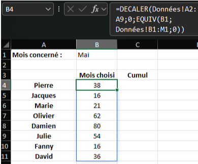
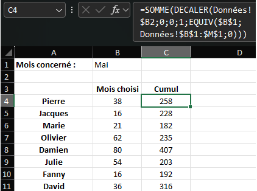

Question 8
Pour reporter les valeurs de chaque personne correspondante sachant qu’elles sont classées dans le même ordre dans les deux feuilles, en fonction du mois sélectionné nous avons utilisé la formule :
=DECALER(Données!A2:A9;0;EQUIV(B1;Données!B1:M1;0))
faire le menu déroulant, il nous a suffi d’utiliser l’option “Validation des données”. Notre formule utilise la fonction DECALER en prenant comme plage de référence la colonne des prénoms dans la feuille de données. Cette sélection se déplace ensuite de “0” lignes et du “numéro du mois” colonnes. Le numéro du mois est défini grâce à la fonction EQUIV étant donné qu’ils sont classés dans l’ordre. Celle-ci va chercher la valeur exacte de B1 (endroit où nous sélectionnons notre mois à l’aide du menu déroulant) dans la ligne où se trouve les mois et en partant de la 2ème colonne afin que l’on ait 1 = janvier / 2 = février ...
Pour continuer, nous avons commencé par chercher ce que représentait le cumul puis nous avons compris que c’était la somme de toutes les valeurs qu’a effectué chaque personne du mois de janvier au mois sélectionné. Nous avons donc établi :
=SOMME(DECALER(Données!$B2;0;0;1;EQUIV($B$1;Données!$B$1:$M$1;0)))
Cette seconde formule fais la SOMME des valeur rapportées par DECALER qui prends comme référence la valeur de janvier et qui sans bouger la sélection l’agrandi en gardant 1 seule ligne mais en ajoutant les colonnes suivantes jusqu’à la même position relative qu'en haut du mois choisi. Nous pouvons notamment remarquer que cette formule n’est valable que pour la première personne mais que nous avons fixé les paramètres pour pouvoir l’étirer correctement à toutes.